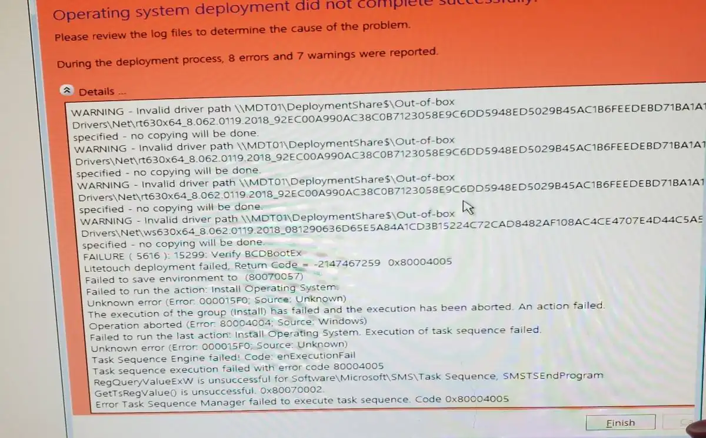
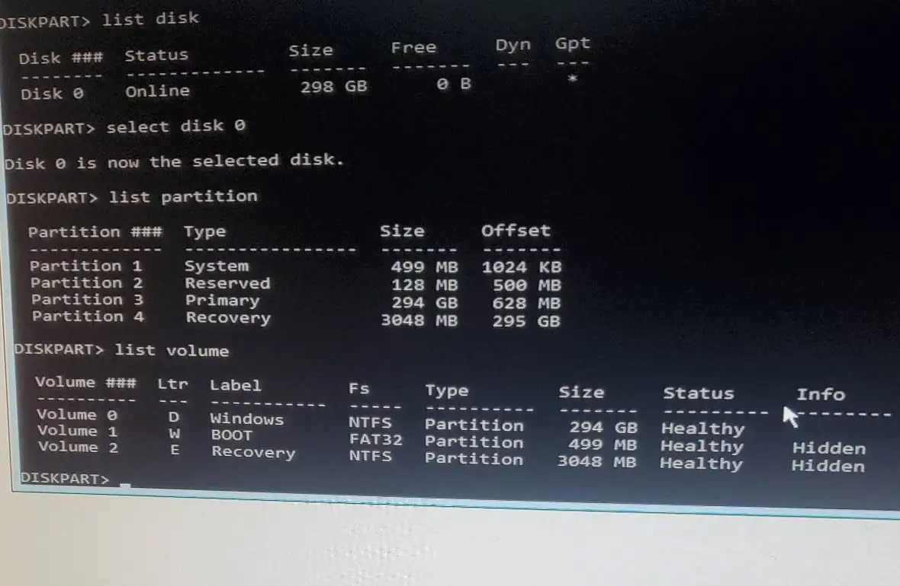
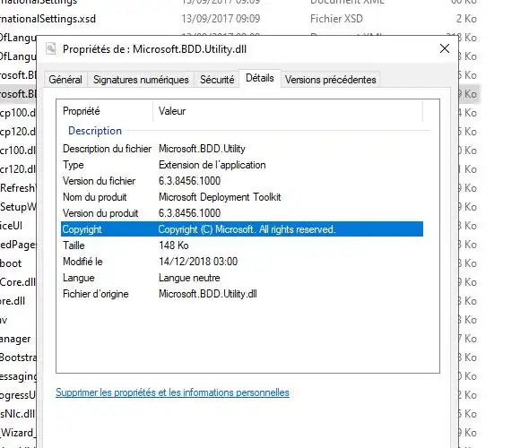
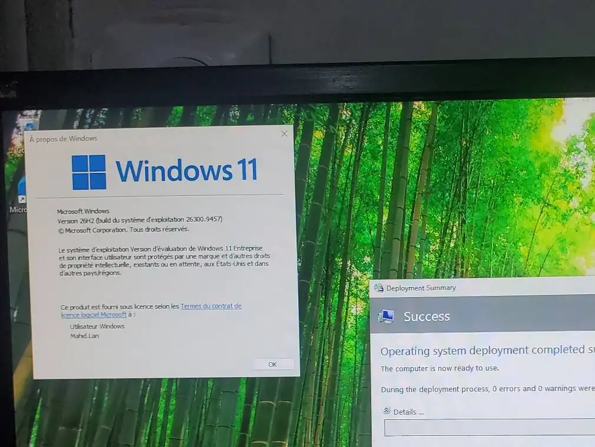
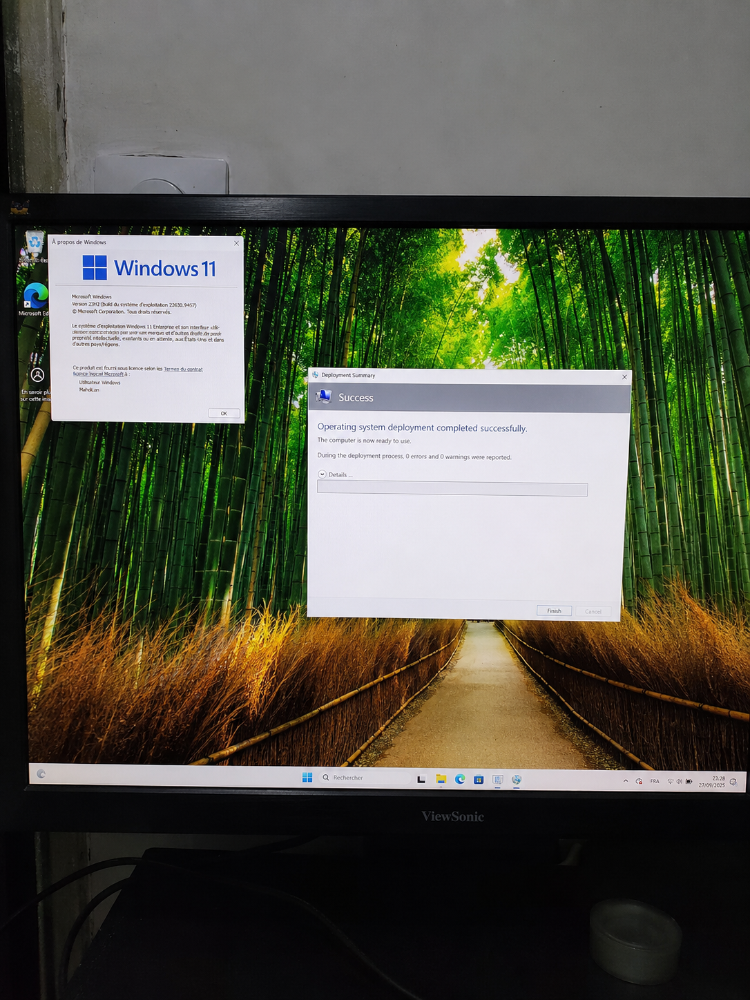

Exploiter
Gérer les comptes, les accès et les postes dans un environnement Windows et Active Directory.
PORTFOLIO PROFESSIONNEL · IT INFRASTRUCTURE
Je suis Mahid Aggoune, technicien systèmes et réseaux, avec une expérience en administration Active Directory, déploiement de postes Windows et virtualisation. Mon objectif : évoluer vers l’administration systèmes et réseaux.
01 · MON POSITIONNEMENT
Mon parcours m’a amené à préparer et déployer des postes, administrer des objets Active Directory et participer à un projet de virtualisation sur serveur Dell. Dans mon laboratoire, je prolonge ces acquis par des scénarios reproductibles et des diagnostics détaillés.
Je privilégie une approche structurée : comprendre le fonctionnement attendu, isoler la cause d’un incident, appliquer une correction ciblée puis conserver une preuve du résultat.
Consulter mon profil détailléGérer les comptes, les accès et les postes dans un environnement Windows et Active Directory.
Préparer et automatiser l’installation des postes, intégrer les pilotes et valider les démarrages PXE.
Procéder par hypothèses vérifiables, examiner les journaux et documenter les correctifs retenus.
02 · DOMAINES TECHNIQUES
Les repères ci-dessous distinguent l’expérience professionnelle, les projets documentés et les sujets que je continue d’approfondir.
Gestion Active Directory, intégration de postes au domaine, GPO, droits d’accès et déploiement de logiciels.
Chaîne MDT/WDS, WinPE, démarrage PXE UEFI, partitions GPT, pilotes et dépannage BCDBoot.
Installation et configuration d’ESXi sur serveur Dell, création de VM et participation à une migration Windows Server.
Fondamentaux TCP/IP, DNS, DHCP, VLAN, routage, pare-feu et outils de diagnostic réseau.
Installation et administration de base Linux, navigation, permissions et exploration des services hébergés.
Objectif de progression sur les scripts d’administration, la supervision, les sauvegardes et les procédures de reprise.
03 · PARCOURS PROFESSIONNEL
Des missions de déploiement et de gestion de parc, jusqu’à l’administration des services et à la virtualisation.
Direction Régionale du Service Médical · Marseille
Administration Active Directory, intégration des postes au domaine, stratégies de groupe, gestion des droits, déploiement de logiciels par GPO et gestion de parc informatique.
Caisse Primaire d’Assurance Maladie · Marseille
Préparation et déploiement de postes Windows 10/11, contribution aux migrations Windows 11, intégration Active Directory et installation du socle technique.
Direction Régionale du Service Médical · Marseille
Installation et configuration de VMware ESXi sur serveur Dell, création de machines virtuelles et participation à une migration Windows Server 2012 vers Windows Server 2016.
Direction Régionale du Service Médical · Marseille
Préparation et masterisation de postes, déploiement d’images Windows 10, intégration au domaine, installation du socle logiciel et suivi des équipements.
04 · RÉALISATIONS
Un projet phare documenté, complété par une expérience de virtualisation issue du parcours professionnel.
Construction d’une chaîne de déploiement à partir de Windows Server 2022, avec Active Directory, DNS, DHCP, WDS et MDT. Le client démarre en PXE/UEFI, charge WinPE puis déploie Windows 11 sur un disque GPT.
PREUVES DU LABORATOIRE
Captures de diagnostic et de validation associées à l’étude de cas.





EXPÉRIENCE PROFESSIONNELLE · 2022
Installation et configuration d’ESXi sur un serveur Dell, création de machines virtuelles et participation à une migration de Windows Server 2012 vers 2016.
Lire la fiche expérience05 · PROGRESSION
Une progression volontairement structurée pour consolider les fondamentaux de l’administration systèmes et réseaux.
Voir la feuille de route complèteFormaliser la structure du domaine, les DNS, les GPO, les groupes et les permissions.
Construire un serveur de fichiers, tester les accès et prouver qu’une restauration fonctionne.
Automatiser des tâches d’exploitation, suivre l’état des services et documenter un incident.
06 · MA MÉTHODE
Les captures, les commandes et les résultats attendus servent à expliquer la démarche, pas seulement à montrer une installation terminée.
Relever le message exact, l’environnement et les journaux utiles.
Tester une hypothèse à la fois et limiter les modifications.
Appliquer une correction ciblée et noter ce qui a changé.
Rejouer le scénario, vérifier le résultat et garder une preuve.
OBJECTIF PROFESSIONNEL
Ce portfolio suit un parcours en construction : des expériences professionnelles, des projets documentés et une montée en compétences progressive.